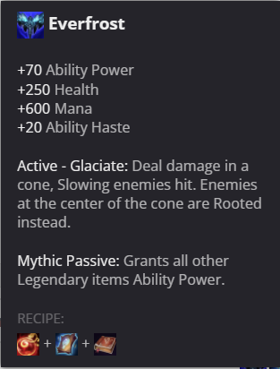
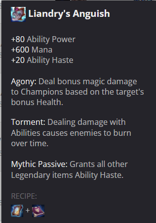
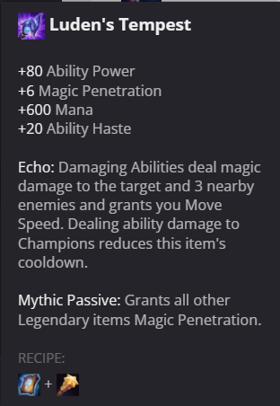

League of Legends Data Analysis Part 3: Regional Differences
See "Overview" section for background information on the project
Finding Regional Differences
For this section, I will be finding the regional differences on various builds. From now on in the next few sections, I will just be using data for the champion Ahri to identify differences, and I have gathered more datapoints on her than most other champions. I will be comparing the Korea, Europe West, North America, and Brazil servers, as these are the largest.
Using this script, I find all the data from my Ahri OTP database, filter out any non-Ahri games, and grab only a select few columns. The most common and near universally agreed on mythic item Ahri builds is Everfrost, so I will see what proportion of players build this item across all the regions.
After running this code, this graph compares the different regions and see what items they are all building.
Analysis:
  
It is interesting how little the Korean region uses any items besides Everfrost. Luden's Tempest is often considered to be a competitive item as well, but perhaps that is only in lower ranked games where one can more easily snowball out of control with the damage it provides. Everfrost is a very consistent item, with a bit of tankiness from the bonus hp and additional utility from the active ability. Ahri is more of a supporting midlaner than an offensive midlaner as opposed to Syndra for example, so the ability to provide more support for her team and allow for other members of the team to get more gold is valuable. Korean games are known for being extremely rigid when it comes to the meta, as it is considered the "best" server, so it makes sense few new builds are being tried. It shows that different regions have vastly different builds even for extremely standard champs like Ahri, so it would be interesting to see for the rest of the champs who follows the "meta" the most.